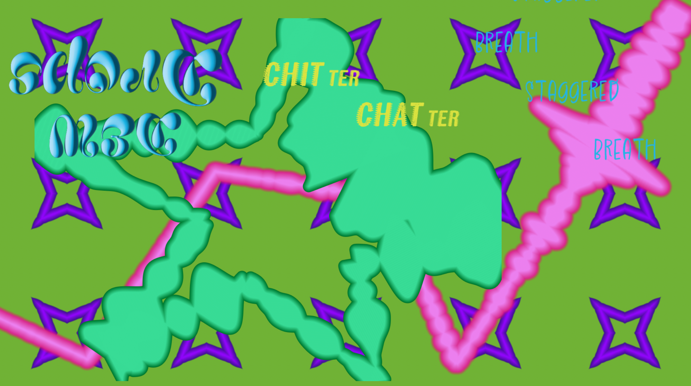

Lab 8 - Anon Functions and Callbacks
Challenge
I had to experiment a bit to get document.write() to work.
Problems
We had to debug the site to get it to work, luckily we were able to work together and make that happen!
Reflection
This was a tough assignment, debugging this lab took a lot of time and different tactics. I am happy to be able to work with a partner for these labs, pair programming has helped me to learn so much.
Results
Go to the console to see the output.